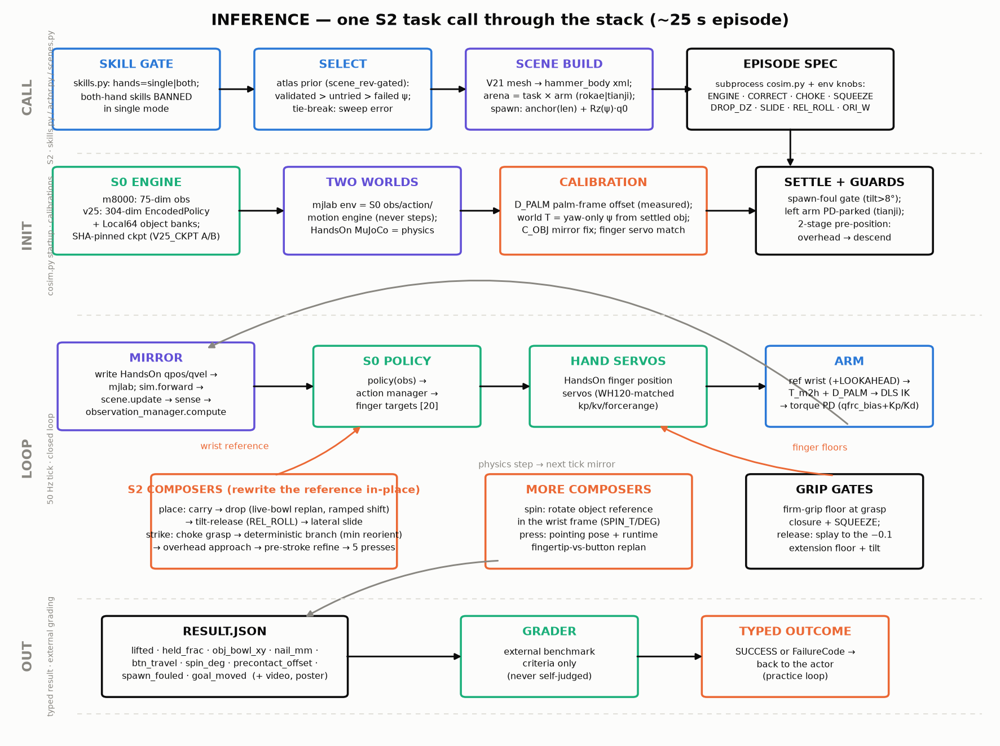
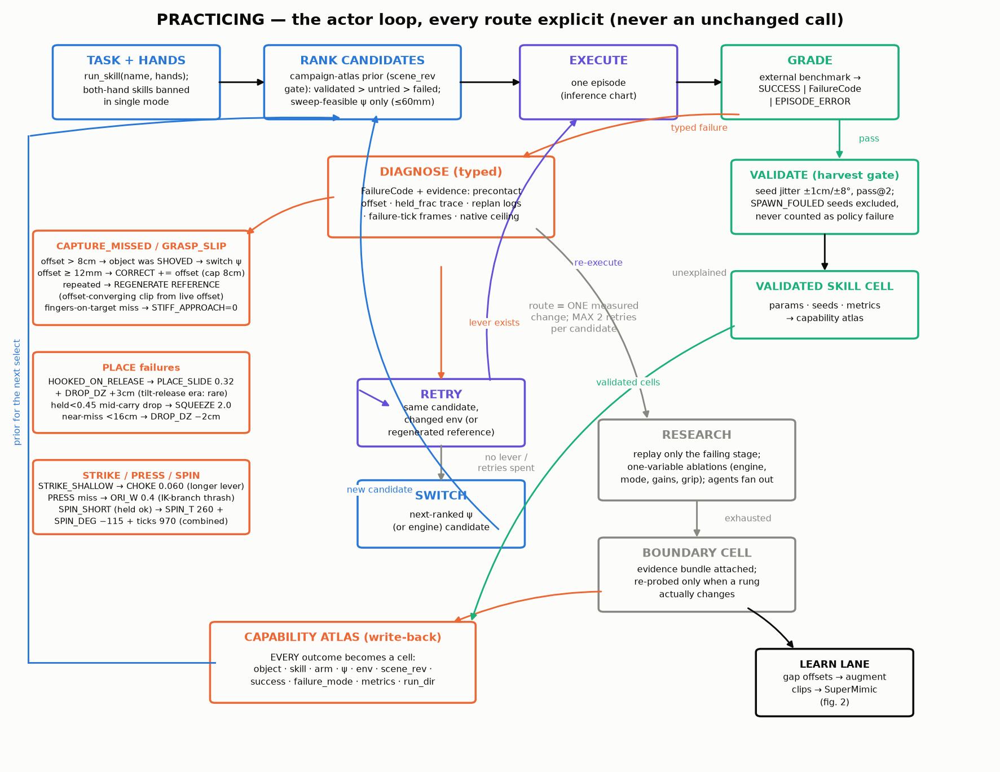
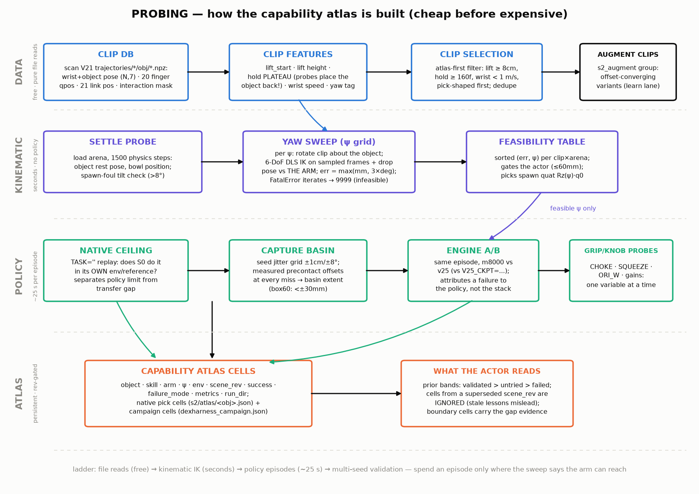

The system is one frozen tracking policy (S0) driven by a deliberate layer (S2) through three flows at three costs: probing builds the capability atlas cheap-before-expensive, practicing is the actor loop that turns typed failures into measured retries or boundary evidence, and inference is what a single task call actually does inside the co-simulation stack. Each chart below names the real components, signals, and thresholds in the code.
From the skill gate to a typed outcome: candidate selection, scene construction, the engine split (mjlab as S0's sensory/motor world, HandsOn MuJoCo as physics), the measured calibrations that bind them, the 50 Hz closed loop with S2's in-place reference composers, and external grading. Nothing in the loop self-judges.

Every failure is typed and every retry changes exactly one measured thing — the full route table is in the chart: disturbance guards, capped CORRECT, reference regeneration, release and grip levers, the per-task knobs. Exhausted candidates become boundary cells with evidence; every outcome writes back to the atlas the next selection reads.

The spend ladder: free file reads over the clip library, kinematic IK sweeps in seconds, policy episodes only where the sweep says the arm can reach, and multi-seed validation before anything counts. Cells are scene-revision-gated so lessons from a superseded harness can never mislead the actor.

Companion pages: design notes (ASPIRE memory + GaP graphs) · pipeline plan + Figure 2 (act/adapt/learn) · Tianji campaign results